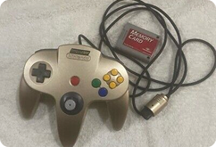
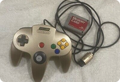

3-Disintegrate
Console: 3DS (February 26th, 2011) Brand: Nintendo Damage: Rubber Cap
The 3DS remains as one of Nintendo’s most gimmicky consoles yet. Nintendo are known for inserting gimmicks into their consoles (the Wii’s motion controls, the Wii U’s remote feature), but the 3DS easily takes the cake. A sequel to the DS system line, the 3DS boasted of it’s ability to give its screen a 3D-effect amongst most of its early catalog. This feature became less and less apparent throughout the console’s life, but the 3DS was mainly seen as the next natural step for the DS lineup.
Opposed to my DS, my 3DS is now completely unusable, due to its joystick. More specifically, all systems came with a rubber cap slapped onto the joystick. This would allow for smoother movement compared to the DS, which was stuck with the D-Pad. Many have experienced this same problem, but for some reason after many play sessions and years of fun, this rubber cap will begin to literally disintegrate. I experienced this first hand during a car trip a few years prior, in which out of the blue, the cap was already cracked, and after a few minutes, was a pile of light grey figments.


 
